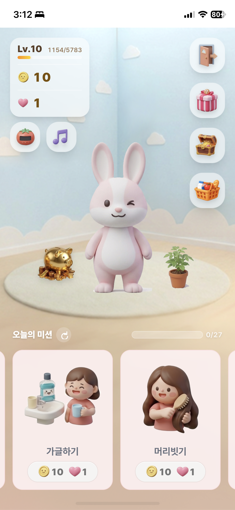
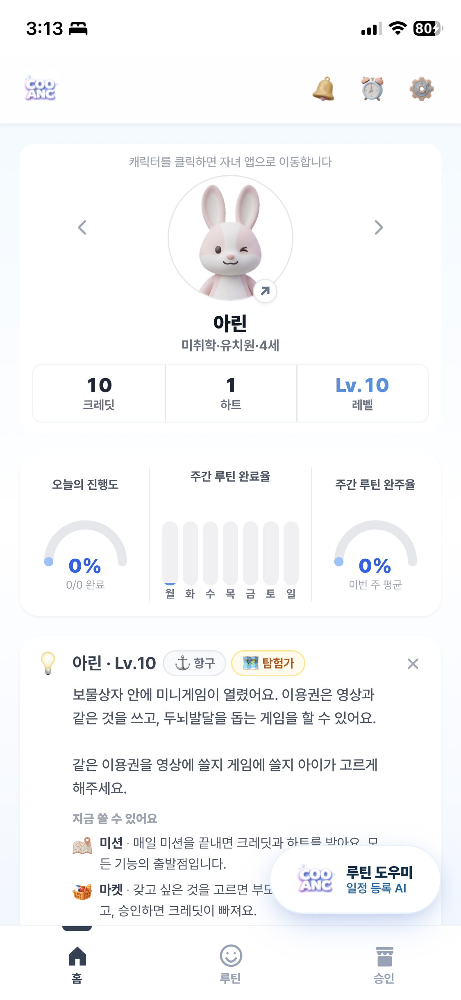

쿠앵크는 앱스토어 없이, 웹사이트를 홈 화면에 추가하는 방식으로 설치돼요. 안드로이드는 버튼 클릭 한 번, iOS는 공유 버튼으로 두 단계만 거치면 돼요.
회원가입을 진행하면서 로그인부터 초기 루틴 설정까지, 아이가 수행할 미션을 함께 세팅해요. 설정한 내용은 부모 화면에서 언제든 수정·추가·삭제할 수 있어요.
아이가 쓰는 스마트폰이나 태블릿에도 같은 방법으로 설치해주세요. 로그인 후에는 아이만의 독립된 화면이 열려요. 부모 화면 설정에서 '시작 화면'을 부모용/자녀용 중 선택할 수도 있어요.
쿠앵크는 부모님 스마트폰과 아이 전용 기기가 서로 연동되는 [듀얼 인터페이스] 시스템이에요. 부모님 폰 외에 아이가 평소 보는 전용 패드나 공기계가 있다면 더 편하게 쓸 수 있어요.
캐릭터, 레벨, 크레딧, 하트가 상단에 보이고 하단에는 오늘의 미션이 카드로 나열돼요. 기능별 자세한 설명은 서비스 소개 페이지에서 확인해주세요.

홈 · 루틴 · 승인 3개 탭으로 구성돼요. 각 탭에서 미션을 설정하고, 보상을 지정하고, 진행 현황을 확인해요.

상단바 오른쪽에서 루틴 알람, 자녀 프로필, 시작 화면 선택 등을 관리해요. 자녀는 여러 명 등록할 수 있고, 프로필마다 수정·삭제가 가능해요.
지금은 정식 출시 전 베타 빌드라 푸시 알림이 작동하지 않아요. 테스트 기간에는 약속한 시간에 부모님이 직접 앱을 켜서 미션을 확인해주시는 걸 권장해요.
레벨이 오를수록 아이의 '여정'이 진행돼요. 지금은 항구 단계까지 확인할 수 있어요.
아직 정식 앱스토어 출시 전이에요. 링크로 접속해 홈 화면에 추가하는 방식으로 이용해주세요.
베타 버전에서는 푸시 알림이 지원되지 않아요. 정식 버전에서 구현될 예정이에요.
부모님 폰 하나로도 이용 가능해요. 다만 아이 전용 기기가 있으면 훨씬 편하게 쓸 수 있어요.
가이드를 다 보셨다면, 바로 설치하고 초기 루틴을 세팅해보세요.